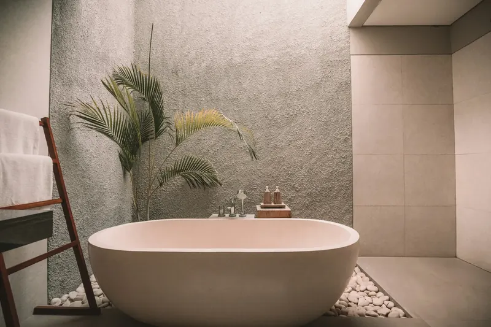

Services
What we design,and how
Five kinds of project, six stages, fees agreed in writing before any drawing starts. If you only want an hour of advice at home, there is a way to start small.
What we design
- 01
HomesVillas, flats, borey houses
A whole house, one floor or a single room. We plan for heat and rain first, then for how your family uses the rooms: where shoes go, where grandparents sit, where the rice cooker lives.
- Layout and furniture plan
- Built-in storage and joinery
- Lighting, fans and air-con placement
- Materials, colours and soft furnishings
Typical projectA one-bedroom refresh with built-ins. Fits a smaller budget.
See: House in Toul Kork - 02
ShophousesShop below, family above
The building type of the city. We bring light into the middle, separate the shop from the home and make the stair something you want to climb.
- Light wells and ventilation
- Separate entrances for shop and home
- New stairs and floors
- Shopfront and signage space
Typical projectA shophouse with a café below and a home above. A medium to large budget.
See: Shophouse in Daun Penh - 03
HospitalityCafés, small hotels, guesthouses
Rooms that guests remember and staff can keep clean. We plan around opening dates, and can work in phases so you stay open.
- Layout and flow for staff and guests
- Bars, counters and built-in seating
- Room fit-outs, linen and lighting
- Phased work while you stay open
Typical projectA ten-room guesthouse in Kampot. A larger budget, done in phases.
See: Guest rooms in Kampot - 04
RenovationsOld Khmer and colonial buildings, tired flats
We keep what is good, like old tiles, timber and high ceilings, and fix what is not: damp, heat, dark rooms and wiring.
- Survey of the building as it is
- Damp, roof and ventilation fixes
- Keeping and repairing old materials
- Drawings for permits where needed
Typical projectOpening up a 1960s villa. A larger budget; a single floor fits a smaller one.
See: Flat by the river - 05
FurnitureMade to order with local workshops
Tables, beds, shelving, vanities and benches, drawn by us and made in town from dry hardwood, plywood, cane and stone. We come back to fix them.
- Drawings in Khmer and English
- Workshop visits during making
- Delivery and fitting
- Repairs to anything our workshops made
Typical projectJust furniture, no renovation. Fits a smaller budget.
See: Joinery in Tonle Bassac
Start small
A two-hour consult at your home
A paid visit with Chantrea: we walk through the space with you and leave a written list of ideas you can do yourself or with us later.

How a project runs
First visitto handover
Durations are typical, in words, because every space is different.
- 01
First talk and site visit
We listen, measure and take photos. You tell us how you live, what must stay and what the budget is.
Free, about an hourYou getNotes from the visit and a fixed design fee in writing.
- 02
Concept
A first idea of the rooms: how they connect, where the light and air come from, and what it might cost.
Usually two to three weeksYou getMood boards, a layout plan and a first idea of cost.
- 03
Design development
The idea becomes drawings. We choose materials with you, with samples in your hand, not on a screen.
Usually three to six weeksYou getDrawings, 3D views and a materials board.
- 04
Build drawings and quotes
A drawing set any builder can price, in Khmer or English. We help you compare the quotes.
One to three weeksYou getA full drawing set and itemised contractor quotes.
- 05
Site and build
We visit site every week and send photo updates on Telegram, so you do not have to stand in the dust.
A few weeks for a room, a few months for a houseYou getWeekly site visits and photo updates.
- 06
Handover and styling
We walk through every room with you, fix the snag list, place the furniture and hang the lamps.
The last weekYou getA snag list, a final walk-through and a care guide.
Fees, in words
How fees work
- A fixed design fee, agreed in writing after the site visit.
- Paid in stages: at the start, at concept sign-off, and with the drawings.
- Site supervision charged monthly or per visit, whichever suits the job.
- Furniture and materials at cost plus a clear handling fee, shown on every quote.
- No hidden commissions from suppliers.
What we need to start
- Photos or a plan of the space.
- A rough budget, even a wide one.
- Who lives or works there.
- Anything that must stay: a cabinet, a shrine, a tree.
- Timing: Khmer New Year, Pchum Ben, a wedding, an opening date.
Where we work
Phnom Penh mostly. Siem Reap and Kampot regularly, with travel costs agreed up front. Further away, ask us.
Aftercare
A check-in visit a few months after handover. A care guide for wood, stone and fabric in the humidity. Help fixing anything our workshops made.
Questions clients ask
Beforeyou ask
Something else? Ask on Telegram or in the enquiry form.
Do you handle building permits?
We prepare the drawings for the permit. You or your contractor submit them. If a change needs a permit, we tell you early, before it costs anything.
Can I keep my own contractor?
Yes. We hand them a full drawing set and visit site. If you do not have one, we can suggest builders we have worked with, and you choose.
What about the rainy season?
We plan roof, wet and outdoor work for the dry months, roughly November to April. Interiors can run all year.
Which languages do you work in?
Khmer and English, in meetings, on site and on paper. Every drawing and quote can be in either.
Can you do just one room, or just furniture?
Yes. Many projects start with one room. Furniture on its own is welcome too.
Do you work with landlords and rented flats?
Yes, with ideas you can take with you or undo when you move: furniture, lighting, curtains, paint.
Do you work outside Phnom Penh?
Siem Reap and Kampot regularly, with travel costs agreed up front. Further away, ask us.